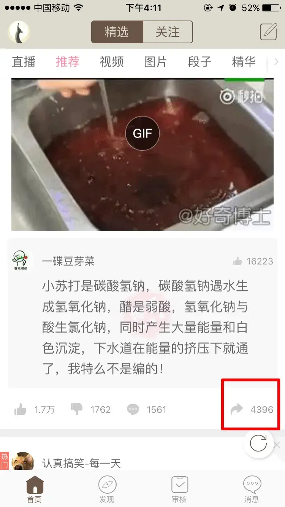
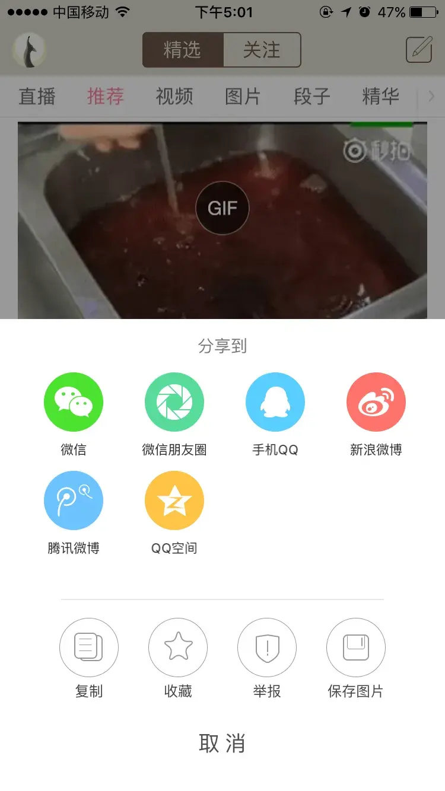
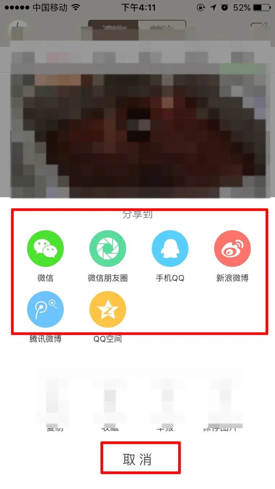
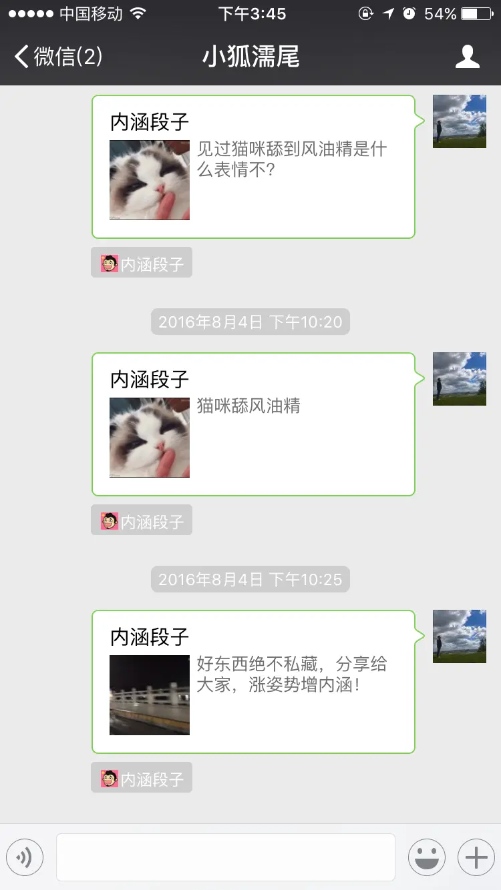
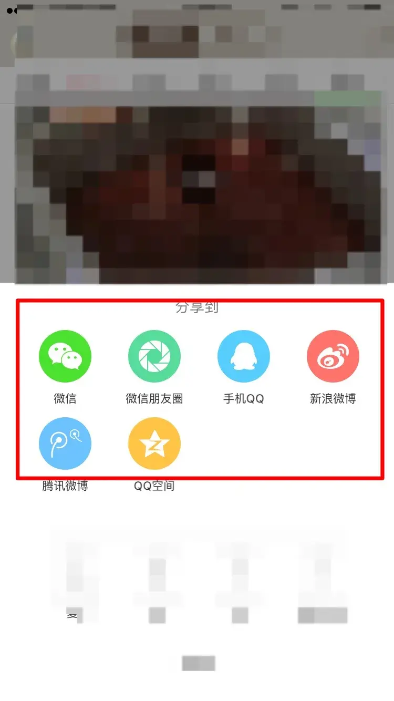
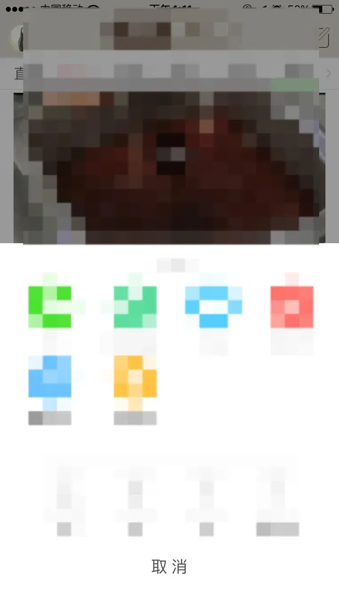
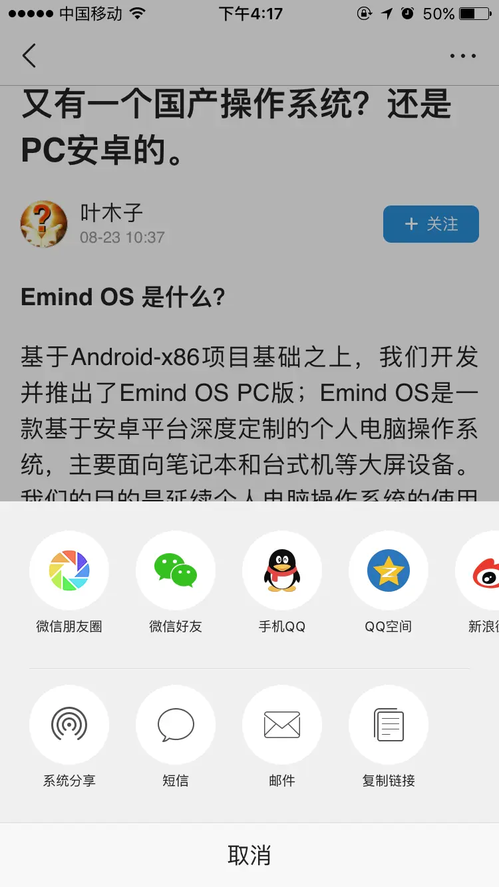

前端工程师的形而上学 (1)—— 一个例子
本文介绍一个认知心理学在「内涵段子」（支持一下公司产品）app 上的应用。
经常听到内涵段子的运营收到用户「内涵段子有没有收藏功能」的反馈，数量之多让人不由得疑惑，为什么这么多用户看不到内涵段子的「收藏」「保存」这几个功能？明明它们就在点击分享时弹出的面板上，按理说应该一眼就能看到。
这其实是一种心理学上的盲视现象，当然一旦你知道有这两个功能并且有意识的去留意时，这种盲视现象就消失了。不过对于不少用户来说，这是个困难的过程。本文就从认知心理学角度来分析一下这个匪夷所思的问题，并且给出相应的解决方案：
精简版结论
两步分析
进入分享弹层之前，分享图标带有强烈的目标引导倾向（就是分享），让人下意识的认为点击这个图标之后的弹层全部功能都与分享有关。
内涵段子分享图标：

进入弹层之后，受目标影响，关注点都在分享功能上，从而导致对其他功能的盲视，而下面那些功能图标风格接近 ios 系统风格，更是加剧了这种盲视效果。（下图为点击后的弹层，注意下面的「收藏」「保存」功能）

用户眼中其实是这样的 (用户只看到两个点，当分享时看到上面一个点，取消时会看到下面一个点，至于中间的部分一般一眼扫过，被忽略掉)：

如何改进
其实很简单，有两个方向
- 分享图标换成 … （表示更多功能）：因为对于此图标，用户心理预期就是点开之后里面有多种功能可选，从而会较为留心的查看。
- 分享图标就是分享功能，单独拆出来（单一图标等于单一功能的心理预期），剩下的用 …（更多功能）表示
以上不管哪个方向，都需要改变「收藏」「保存」等功能图标的风格，避免跟系统的过于接近，最好是跟内涵风格保持一致。
想深入了解分析过程的童鞋，可观看完整版文章。主要从一些心理认知理论入手进行分析，文中包含了一些当前认知心理学领域的很有趣的观点，推荐阅读。
完整版的分析过程
两个问题（要是有投票就好了）
- 你有没有留意到「内涵段子的收藏，保存功能」？
- 如果留意到了，从使用段子开始到留意到花了多长时间？
为了描述一个用户使用内涵段子的完整心理，所以加入我个人的使用内涵的经历，不想了解的可以跳过此段落，直接看第二个大标题段落。
内涵使用经历背景
到今天为止，我使用内涵段子 app 差不多有半年的时间。在使用过程中让我最疑惑的地方是，有时候遇到一个很喜欢的图片或段子想保存或者收藏下来，但找不到相应的功能。
作为一名工程师，我自认为使用 APP 的经验非常丰富，但我的的确确没有发现类似功能。最后我只能猜测是出于某些特别的考虑，pm 没有设计这两个功能。以及为了收藏我喜欢的一些段子，只能把它直接分享到我个人的微信中，如下图（很蠢但我没找到好办法）：

今天第一次参加内涵相关的需求讨论会时，我又想起这个问题，于是问了一下相关的负责人，被告知是有「收藏」「保存」功能的，只是我没有发现（一般人试图找了几次无果后，基本就放弃寻找了，转而用其他手段代替）。
于是我挨个把所有能看到的图标，全遍历了一遍，千真万确，最后我发现了几个被我忽略近半年的功能 —— 因为某些原因，这些功能被盲视了，即便我曾无数次的点击分享图标。如下图所示，收藏和保存功能就在弹层下方：

为什么「收藏」「保存」功能被盲视了？
这可以从认知心理学上找到原因。简单来说，主要有四个原因（不展开了，只说结论）：
人的视线焦点集中区域（中央视野）非常窄，在正常屏幕距离下（半臂到一臂距离），我们的视线焦点大概只有拇指指甲盖大小。
人的注意力非常有限，普通人查看手机时注意力基本只能集中于一点（通常是视线焦点）
人的注意力很容易被目标引导，跟目标相关性强的容易被注意，反之容易被忽略
人对事物的认知会受经验和习惯的影响
操作步骤分析
点击分享图标
分享图标：

有互联网产品使用经验的人对这个图标非常熟悉，一般是想要分享才会点击这个图标。注意这里的因果关系，一般不是先点了这个图标，再决定是否分享，而是一开始就带有目的性。
这个分享图标太常见了，以至于会设定一种强代表性（也带有强引导性）：图标即功能，在熟练使用互联网的人看来，分享图标与分享功能这二者是一一对应的（如果出现了分享之外的功能，则是不符合用户心理预期的）
上面两点综合起来决定了用户点击这个图标的预期——就是奔着分享去的，我进这个页面会看到分享功能（也是前面认知理论的 3，4 点）
进入分享弹层
功能弹层：

进入分享弹层之后，由于用户实现有了目标和预期并且受其影响，他的视线和注意力是这样的（根据前面的认知理论，用户的视线焦点范围很小，这个焦点只会放在最值得关注的地方），如下图：

如果用户不想分享了，按照经验习惯直接把目光跳到底部，这个时候他的视线焦点和注意力如下图：

被盲视的另一个原因
头条分享弹层 && 内涵分享弹层
头条：

内涵：

对比可以发现，内涵的分享弹层下部按钮风格跟 ios 的风格设定非常接近，而且这种风格采用浅灰色线条式设计，视觉敏感度很低（不容易被边界视觉留意到）。用户再结合自身使用 ios 的经验，下意识会认为这部分只是系统自带的一些杂七杂八的功能，从而视线直接扫过不看，导致信息丢失。
如何改进
其实很简单，有两个方向
分享图标换成 … ，表示更多功能，因为对于此图标，用户心理预期就是点开之后里面具有多种功能，从而会较为留心的查看。
分享图标就是分享功能，单独拆出来（单一图标等于单一功能的心理预期），剩下的用 …（更多功能）表示
以上不管哪个方向，都需要改变「收藏」「保存」等功能图标的风格，避免跟系统的过于接近，最好是跟内涵风格保持一致。

人存于世，因缘际会
我是兴华，很高兴见到你